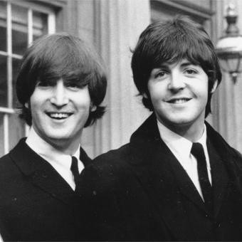
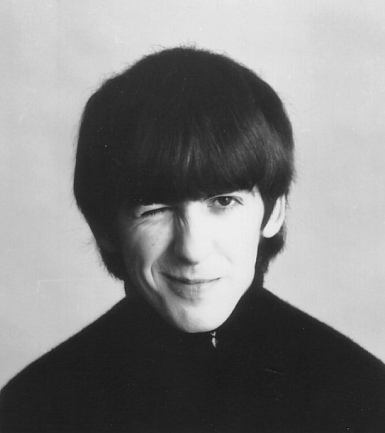
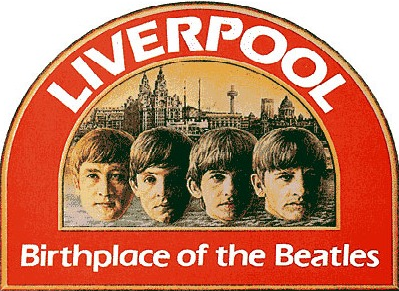

John Lennon | George Harrison | Ringo Starr | Paul McCartney | Discography | Other Beatles members | Discography Selections
  It all began in 1957, Liverpool England, the second most unlikely place in the world to give birth to stardom (the first being Demorest, Georgia). John Lennon had learned the banjo at a young age, moving quickly to the guitar and then starting his own band. Dubbed "The Quarry Men", this high school skiffle group played around Liverpool, changing members more frequently than they changed socks. Soon, a young Mr. Paul McCartney sauntered up to John in between concerts. After hearing him play the guitar, John said "Hey. Join me band, we'll become the most popular group in the world." Not wanting to appear anxious, Paul waited a day before saying "Alright, sure." The famous Lennon-McCartney duo was born.
Eight months later Paul had a suggestion for a new recruit. Three years their junior, George Harrison was nonetheless a wizard on the guitar. John was hesitant to allow such a young person into the band, but George won him over. Two weeks before his 15th birthday, George officially became a member of the band. I don't know about you, but my fifteenth birthday wasn't nearly as productive as his.
The Beatles did not immediately jump out to stardom. In fact, their climb was somewhat like a roller coaster, a slow clanking to the top, the suspense building and waiting for that first plunge over the hill. For months they toured Liverpool and the surrounding towns trying to build a fan base. Eventually they made their way Hamburg, playing to a particularly rowdy crowd. The boys were forced to rev-up their performance for the demanding audience, teaching them how to become true showmen. Upon returning to Liverpool, they discovered some of their fame had preceded them.
 Brian Epstein, a record store owner in Liverpool, got wind of The Beatles about this time. His interest was piqued, so he went to watch them perform one night. At first glance, they appeared like most young Liverpudlians at the time: uncouth hair, leather jackets and dark trousers. But when they played, their synthesis created something marvelous. Something about their energy when together inspired Brian to become their manager. He pulled some strings and got the boys a few auditions. Sadly, they were unfruitful. This didn't dampen their resolve, however, and Epstein continued lobbying for the band until he finally secured an audition with George Martin at Parlophone records.
Martin, as it turns out, loved their sound. He, too, was an early victim of the Beatles' undeniable charm and catchy beats, succumbing to their charismatic energy like Bugs Bunny to a carrot. He cleaned them up, put them in tailored suits and gave them a resounding thumbs-up (It was Brian Epstein who suggested they wear suits). The only part of the package he didn't seem to like was their drummer, Pete Best. In a move that still raises eyebrows to this day, Epstein was asked to replace Pete before the deal would be complete. Richard Starkey, our beloved Ringo Starr , would take his place, completing the rock and roll quartet. The Beatles were complete.
John Lennon | George Harrison | Ringo Starr | Paul McCartney | Discography | Other Beatles members